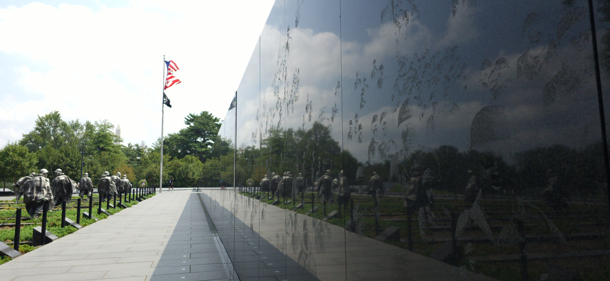

At the Hall of Heroes at Pentagon, celebrated the retirement of a Brigadier General, the Joint Staff Surgeon.
Brig. Gen. (Dr.) John served as the Joint Staff Surgeon. As such, he was the senior medical advisor to the Chairman of the Joint Chiefs of Staff, providing military medical advice to the Chairman, the Joint Staff, and combatant commanders. He coordinated all Joint Force military health services, including operational medicine, force health protection and readiness with the Office of the Secretary of Defense, combatant commands, services, interagency and international partners to seamlessly shape and synchronize the global health service continuum. link
Learned of his career in the Air Force and service to the nation as a surgeon, a pilot, and a commander of a squadron.
He was recognized for 37 years of service.
At the ceremony, his wife of 41 years and his 6 children were recognized along with him.
A fitting recognition and tribute to his dedication to his family and the nation.
At other times in life, we pay a tribute yet there are no replies.
After the ceremony, walked across the Memorial Bridge in Washington DC.
To a memorial in the Mall, I have yet to visit in person.
Had seen parts of the memorial through photographs.
Got to feel and see the intent and symbolism that can’t be had except visting the place in person,
To the veterans of the Korean War and their family
Heroes to the family and to the nation.
Thank you for serving the country of birth and saving a country far away and its people in Korea 70 plus years ago.



The Korean War Veterans Memorial in Washington, D.C., honors those who served in the Korean War (1950–1953).
Brief History
Concept & Purpose
Authorized by the U.S. Congress in 1986 to commemorate the sacrifices of U.S. service members and allies during the Korean War — sometimes called “The Forgotten War” because it received less public attention than WWII or Vietnam.Design & Symbolism
Dedicated July 27, 1995 (the 42nd anniversary of the Korean Armistice Agreement).
Main elements:
19 stainless steel soldier statues (representing an ethnic and service-branch cross-section) moving through rugged terrain.
Mural Wall etched with over 2,400 photographic images of personnel and equipment from the war.
Pool of Remembrance, inscribed with the number of killed, wounded, missing, and prisoners of war.
The arrangement of statues and their reflections in the wall create the illusion of 38 soldiers — symbolic of the 38th parallel dividing Korea.
Recent Updates
- In 2022, the memorial added the Wall of Remembrance, inscribed with the names of more than 36,000 Americans and over 7,100 Korean Augmentation to the U.S. Army (KATUSA) troops who died.
Timeline
1986 – Authorization: U.S. Congress passes Public Law 99-572 authorizing the memorial.
1989 – Design Selection: A nationwide competition selects a team led by architect Frank Gaylord (sculptor) and Cooper-Lecky Architects.
1993 – Construction Begins: Groundbreaking ceremony held on June 14, 1993 (Flag Day).
1995 – Dedication: Dedicated on July 27, 1995, the 42nd anniversary of the Korean Armistice Agreement. President Bill Clinton and South Korean President Kim Young-sam attended.
2016 – Wall of Remembrance Legislation: Congress approves an addition to honor fallen service members by name.
2021–2022 – Wall of Remembrance Construction: Built and officially dedicated on July 27, 2022.
Symbolism in the Memorial
Nineteen Soldier Statues
- Represent the U.S. Army, Navy, Air Force, and Marine Corps.
- Ethnically diverse to reflect the makeup of American forces.
- Moving in formation through a field of juniper bushes and granite strips meant to symbolize Korea’s rugged terrain.
Reflections = 38 Soldiers
- Statues reflected in the polished granite Mural Wall double the number to 38 — symbolic of the 38th parallel, the dividing line between North and South Korea.
Mural Wall
- Over 2,400 sandblasted photographic images from the Korean War, taken from National Archives and the military branches, representing all services and support roles.
Pool of Remembrance
Surrounded by inscriptions:
- “Freedom Is Not Free”
- Casualty figures: 36,574 Americans dead, 103,284 wounded, 7,200+ KATUSA killed.
Wall of Remembrance (2022)
- Lists names of 36,634 Americans and 7,174 KATUSA troops who died.
- Brings the memorial in line with the Vietnam and WWII memorials, which also list names.